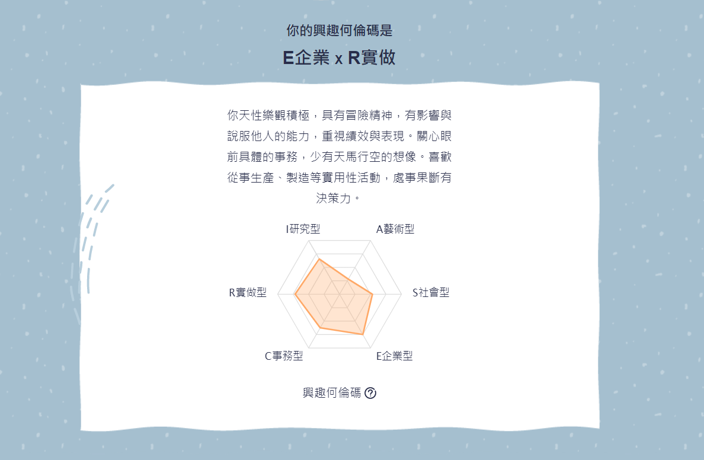
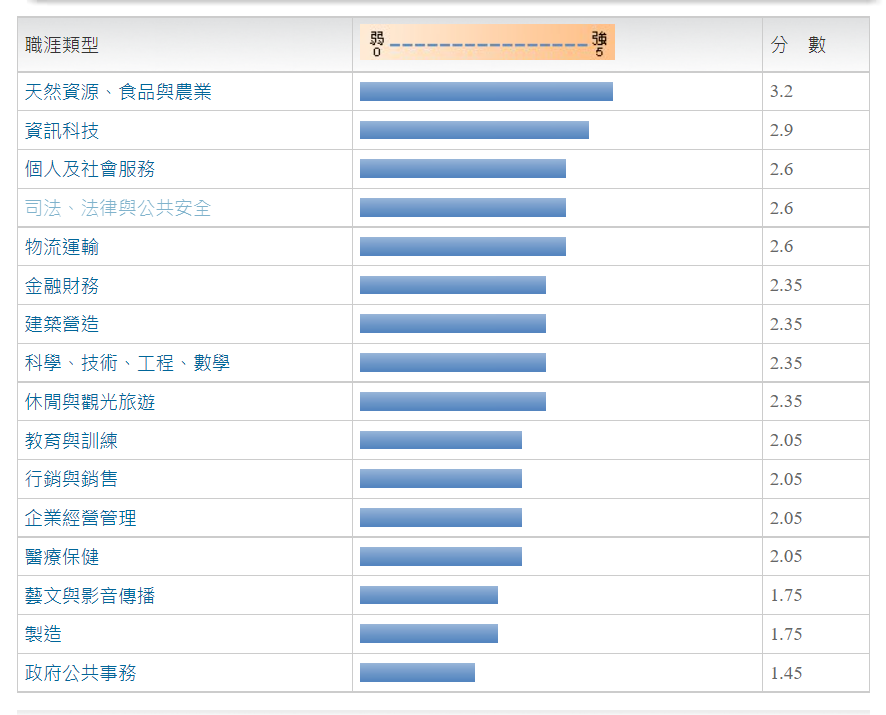
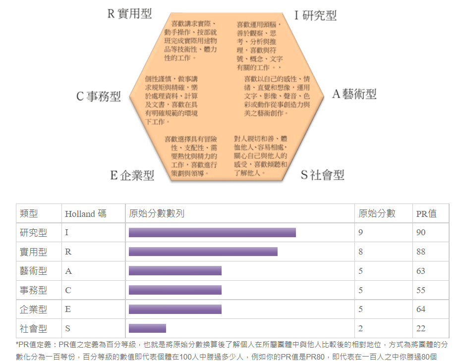

職涯測驗結果
賴紀丞的職涯生涯測驗
興趣何倫碼

16種職涯類型分數

職業性格類型

研究型I:
研究型的人是典型的“思辨者”(Thinker)，性格特徵為好奇分析、謹慎條理、理性獨立、謙遜、精確、批判。
喜歡運用頭腦，善於觀察、思考、分析與推理，依自己的步調追根究底、解決問題，不喜歡他人給予指引，做事時能夠提出新的想法與策略，但對實際解決問題的細節較無興趣，喜歡與符號、概念、文字有關的工作，不必與人有太多的接觸或運用體力的工作類型。
研究型的人的價值觀是自由不守舊的，對嶄新見解和經驗持開放態度，且擁有廣泛的興趣，不是很在乎別人看法，喜歡和有相同興趣或專業的人討論，否則還不如自己看書思考。
研究型適合從事需要數理及科學能力，而較不需要人際領導能力的工作，其典型職業為：工程師、化學家、數學家、物理學家、地質學家、醫學家、心理學家、營養師、獸醫、藥劑師等。
實用型R:
實用型的人是典型的實作者(Doer)，性格特徵為情緒穩定、坦誠直率、獨立實際、謙虛有禮、穩健節儉。
喜歡講求實際、動手操作、按部就班完成實際用途物品等技術性、體力性的工作，例如操作機械、工具、運動設備或養育動物等工作，寧願實際動手作而不喜歡多言，比較喜歡獨立做事，避免主觀性、學術性、富想像力或人際互動的工作類型。
實用型的人的價值觀是重視傳統的，將雄心與自我控制視為重要的價值觀，講求實事求是而非寬容的態度，形成較封閉的價值觀系統。
實用型適合從事技術性、體力性之典型職業例如：機械維護師、電器工程人員、太空人、塔台工程師、飛行員、廚師、工匠、農業工作、汽車修護員、警察、消防員等。